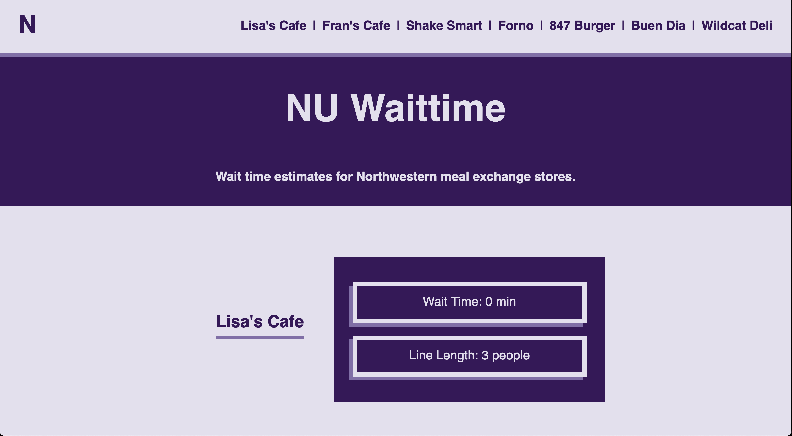

June 5, 2026
Submitted By Colton Kelly, Kit Rady, Adrian Salonga, Charles Tang
Section 33 Team 04
Design Thinking and Communication Program
Professors Skwish and Coney
McCormick School of Engineering and Applied Science
Northwestern University
Evanston, Illinois 60208

this will be filled out later once there are contents to be linked to in this table
this will be filled out once all the figures are in the report
this will be filled out once all the tables are in the report
Students at Northwestern University face a lot of frustration when waiting in lines at meal exchange stores. The source of this frustration comes from the total wait time of the lines, the unpredictability of the wait times, and the noise of the stores.
Our purpose is to reduce the frustration students feel when waiting in lines by informing them of the estimated wait time at each store. The goal of this is to give students more information about where they should eat at any given time. By doing so, this should limit the wait times at stores when they are at their busiest.
We interviewed students who frequently go to Lisa’s Cafe, a meal exchange store, to hear about what their main complaints were (See Appendix A). Then, we conducted background research on patents and companies with similar designs (See Appendix B and C). We used this research to create four mockups before moving forward with a camera monitoring design (See Appendix D).
We trained a modified version of the YOLO Object Detection to recognize food from Lisa’s Cafe. It can recognize when food is in the defined “pickup zone” and when people are in the defined line. We track each person as they travel the line and receive their food, and use that total time as an estimate for the current wait time at a store.
| Components | Benefits |
|---|---|
| Camera | 132 degree viewing angle wide enough to view entire line in a store |
| YOLO Data Processing | Algorithm that can identify people in line and food being received |
| Website | Website makes number of people and estimated time easy to view |